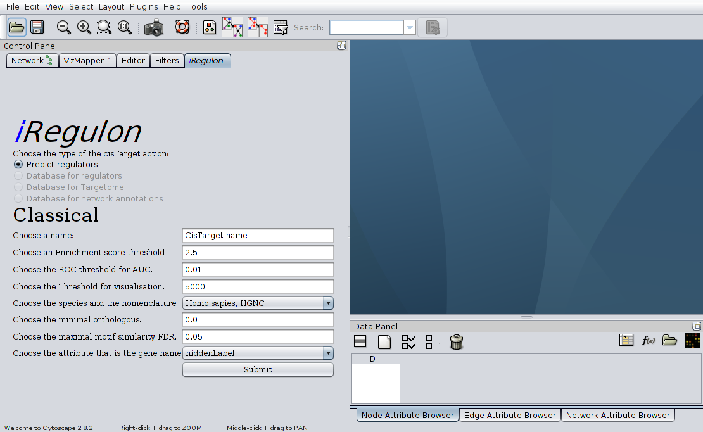
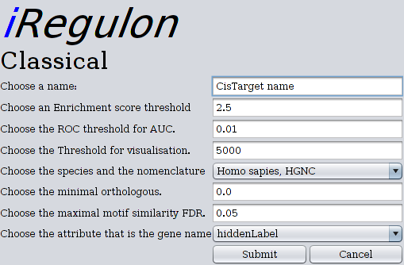

iRegulon Help
Input of the parameters
The genes (nodes) that iRegulon need as input are selected as usual in Cytoscape.
The plugin can be started in two different ways:
- Via the Control panel (Get the Panel)
- Via the input frame (Classical)
Both types of input has there advantages. And it's up to the user to decides the kind that suits him the best.
The input parameters
The following parameters can be filled in:
- The name of the job
- The enrichment score threshold
- The ROC threshold for AUC
- The threshold for visualisation
- The species and the nomenclature
- The minimal orthologous
- The maximal motif similarity FDR
- The attribute that is the gene name
The name of the job
The name given here will also be the name that the results will have. This name is also the name that will be suggested for saving.
The enrichment score threshold
This is the minimal score threshold to consider a motif as being relevant. The best option for these score threshold is to choose between 2 or 2.5.
The ROC threshold for AUC
The Area Under the Curve (AUC) values are computed on 3% of the receiver-operating curve (ROC) curve. This corresponds to the first 420 genes. In these genes is expected to find the given genes.
The threshold for visualisation
his is the x-axis cutoff for visualization of the ROC curve. This value corresponds with the top genes shown on the results.
The species and the nomenclature
This is the species and the gene nomenclature. All the possible species and there nomenclature that can be used is shown here. Currently these are:
- Homo sapiens, HGNC
- Mus musculus, MGI
- Drosophila melanogaster, FlyBase
The minimal orthologous
This is a score for the gene orthology. How closer this score to 0, how more ortholog genes will be shown. This score must be between 0 and 1.
The maximal motif similarity FDR
This is the score for the similarity of the motifs. How closer to 0, the more similar the transcription factor will be. The score must be between 0 and 1.
The attribute that is the gene name
Here the gene name can be selected. Every attribute of the nodes can be selected besides lists. The selected gene name must have the selected nomenclature.
The standard Control panel

The image above is a print screen of the standard control panel, extended with the plugin. The big different with the other screens is that on this panel it's possible to choose between the different flavours of iRegulon.
The mean advantage of this input screen is that the parameters are kept. So if there are other parameters used in the analysis, these parameters are kept until changed or the panel is closed.
The standard input frame

The image above is the input frame.
The mean advantage of this input screen is that the name is automaticly changed to the name that the currently selected has.
Back to index
iRegulon was developed in the Laboratory of Computational Biology (S. Aerts lab), University of Leuven, Belgium.
Developers: Koen Herten & Bram Van de Sande.
Copyright 2012 Katholieke Universiteit Leuven.